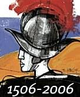
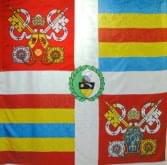

La storia
Gli alabardieri del
Pontefice
1505
Giulio II negozia con gli svizzeri l'invio di un contingente di volontari a Roma da usare come guardia personale della sua residenza.
1506
Il 22 gennaio entrano a Roma le prime guardie svizzere.
1527
Le truppe di Carlo V, imperatore, entrano in Vaticano e lo saccheggiano. Nella "battaglia" per la difesa dei sacri palazzi restano uccise 147 guardie svizzere.
1548
Papa Paolo III ricostruisce il corpo con l'arruolamento di 225 uomini.
1798
Il corpo delle guardie svizzere viene sciolto d'autorità da Pio VI.
1801
L'istituto della Guardia svizzera e il relativo "esercito" vengono ricostituiti da Pio VII.
1884
Papa Leone XIII rinforza il contingente delle sue guardie fino a portarlo a 200 uomini.
1979
Papa Giovanni Paolo II procede a una nuova riorganizzazione del corpo.
2002
Entra nel corpo delle guardie svizzere il primo soldato non europeo (è un indiano).
I requisiti
I "soldati del Papa" devono essere cittadini svizzeri, di religione cattolica, in età compresa tra i 19 e i trent'anni. Devono essere celibi ed essere in possesso del diploma di scuola superiore.
L'uniforme
L'uniforme rinascimentale fu "ritocca-ta" dal comandante Jules Repond nel 1914. I colori giallo, azzurro e rosso rappresentano i colori del casato dei Medici. |
|
|
Le Guardie Svizzere Pontificie a San Giuliano Milanese in occasione del 500° anniversario di costituzione del Corpo papale
"Wilkommen, Päpstliche Schweizergarde, in San Giuliano Milanese die stadt der Giganten"
Zivido di San Giuliano Milanese il 13 e 14 settembre 1515 fu il cruento teatro della famosa "Battaglia dei Giganti", passata alla storia come "di Marignano". Questo bimillenario borgo storico, trovatosi al centro del campo di battaglia, ancora oggi conserva, sotto la quattrocentesca chiesetta parrocchiale, i resti dei caduti traslati nel XVII sec. dall'imponente monastero "alla Vittoria" voluto e fatto edificare a San Giuliano Milanese dal vincitore Francesco I con decreto reale del 1518.
Il decreto reale, il cui testo integrale è riportato nel sito web dell'Associazione Culturale Zivido (www.aczivido.net), per la sua autorevolezza ed in quanto documento primario, fa tabula rasa delle troppe ambiguità che ancora oggi si tramandano riguardo il vero luogo dove si svolse la "Battaglia dei Giganti".
E' doveroso ricordare come il tragico evento ebbe per l'Europa intera un'importanza notevole e duratura in campo politico, militare e culturale. Aspetti, questi, ben evidenziati nella conferenza internazionale tenutasi a San Giuliano Milanese lo scorso 17 settembre.
L'Associazione Culturale Zivido e l'Amministrazione della Città di San Giuliano Milanese da 15 anni organizzano la rievocazione storica dei personaggi della "Battaglia dei Giganti", appuntamento che vede la partecipazione attiva di centinaia di sangiulianesi, che è divenuta momento di qualificato incontro internazionale.
In occasione del 500° anniversario della costituzione del Corpo delle Guardie Svizzere Pontificie, che vede oltre un centinaio di esse ripercorrere a piedi l'antico tragitto verso Roma, Zivido di San Giuliano Milanese è stata inserita quale tappa ufficiale, non semplice transito, nel programma definito dagli organizzatori elvetici. La ventennale positiva e concreta collaborazione fra l'Associazione Culturale Zivido e le Autorità Consolari del Consolato Generale di Svizzera a Milano ha favorito questa importante decisione.
Nel pomeriggio del 10 aprile prossimo a Zivido le Guardie Svizzere Pontificie, unitamente alle Autorità cittadine, deporranno una corona di fiori ai piedi del monumento che ricorda i caduti Elvetici della "Battaglia dei Giganti" con una cerimonia di grande commozione.
Lo scorso settembre, per ricordare i 40 anni dall'inaugurazione del monumento (1965-2005) opera dello scultore elvetico Josef Bisa, il Consolato Generale di Svizzera a Milano, l'agenzia di pubbliche relazioni della Confederazione elvetica "Presenza Svizzera" e l'Associazione Culturale Zivido hanno realizzato una serie di quattro suggestive cartoline commemorative raccolte in un contenitore.
La "Battaglia dei Giganti" rappresentò il tragico prologo alle centinaia di Guardie Svizzere che sacrificarono, qualche anno dopo, la propria vita nella difesa dell'Augusta persona del Papa.
L'Associazione Culturale Zivido, l'Amministrazione della Città di San Giuliano Milanese ed i cittadini tutti si onorano di accogliere con calorosa simpatia e sentimento di stima le Guardie Svizzere Pontificie il prossimo 10 aprile.
San Giuliano Milanese, 11.02.2006 |
Programma |
ore 14,00 |
Arrivo delle Guardie Svizzere Pontificie insieme ad una rappresentanza del Corpo Forestale dello Stato nel bimillenario borgo storico di Zivido.
Sfilata lungo la via Corridoni fino a raggiungere la quattrocentesca chiesetta parrocchiale
Arrivo del corteo davanti al Monumento ai Caduti Svizzeri (saranno schierati anche 2 agenti della Polizia Locale in Alta Uniforme, forse anche una rappresentanza dei Carabinieri)
Deposizione delle corone da parte delle Guardie Svizzere Pontificie e della Citt� di San Giuliano Milanese al monumento che ricorda i caduti della Battaglia dei Giganti (Zivido 13 e 14 settembre 1515)
Esecuzione del "Silenzio"
Scoprimento della targa commemorativa dell’evento
Breve cerimonia religiosa
Esecuzione inni nazionali: Italiano, Svizzero, Città del Vaticano
Saluto del Console Generale di Svizzera a Milano Dr. David Vogelsanger
Saluto del Presidente della Fondazione elvetica “Pro Marignano”, dott. Roland Haudenschild |
ore 15,15 |
Arrivo delle Guardie Svizzere Pontificie nella splendida cornice del complesso monumentale di Rocca Brivio (San Giuliano Milanese)
Il Duca di Milano, Massimiliano Sforza, e la cugina Isabella d'Aragona insieme alla corte ducale danno il benvenuto
Saluto del Sindaco di San Giuliano Milanese, Marco Toni, e del Sindaco di Melegnano, Ercolino Dolcini
Saluto del Presidente del Comitato Marcia Colonnello Eugenio Rüegger |
|  |
Cinquecento anni
di Guardia Svizzera Pontificia
1506 – 2006
Marcia celebrativa a Roma |
 |
Il 21 giugno 1505 Papa Giulio II chiese alla Confederazione Svizzera di inviargli una guardia del corpo di 200 uomini. Nell'inverno del 1505-1506 i primi 150 uomini, partendo dai territori nazionali di Lucerna e Zurigo, marciarono verso Roma, probabilmente passando per il Gottardo. Il 22 gennaio 1506 entrarono a Roma. Questo giorno è considerato il giorno di fondazione della Guardia Svizzera. Così noi nel 2006 festeggiamo il “Cinquecentenario della Guardia Svizzera Pontificia
Il 6 maggio 1527, 147 guardie svizzere caddero nel tentativo di difendere Papa Clemente VII (Sacco di Roma). Per questo, il 6 maggio di ogni anno si celebra la giornata commemorativa della Guardia.
Una imponente marcia celebrativa
Nella primavera del 2006, ex-guardie svizzere partono dalla Svizzera e marciano a Roma. Vogliono così ricordare i loro primi compagni, ringraziare per i 500 anni di servizio ed essere un segno per l'oggi e il domani. Un comitato di esperti si occupa dell'organizzazione.
Circa 70 ex-guardie svizzere partono il 7 aprile 2006 da Bellinzona. La loro marcia durerà 27 giorni: 23 giorni di marcia, 4 di riposo. L'itinerario è lungo circa 700 chilometri, la prestazione giornaliera circa 32 chilometri. L'arrivo a Roma e l'entrata in Vaticano avverrà il 3 maggio 2006. Altre 40 ex-guardie svizzere si uniranno al gruppo a cicli settimanali.
I festeggiamenti a Roma avranno luogo dal 3 al 6 maggio 2006. Culmineranno il 6 maggio con il giuramento delle nuove reclute, in presenza di circa 1600 ex-guardie svizzere e una schiera di illustri personalità provenienti da paesi di tutto il mondo.
Un percorso storico
L'itinerario è stato stabilito, sulla base di ricerche storiche, in collaborazione con esperti di associazioni italiane, il M.A.S.C.I. Movimento Adulti Scout Cattolici Italiani e la Confraternita dei Romei della Via Francigena , e dopo due giri di ricognizione.
Passando per Bellinzona si arriva a Magadino, dopo due ore e mezzo di battello a Ispra (Italia), si prosegue per il Parco Naturale del Ticino, si passa per Ferno, Lonate Pozzolo, Abbiategrasso, Milano/San Giuliano Milanese, Piacenza, Fidenza, Passo della Cisa, Siena, Viterbo, Roma.
Da Sancta Cristina, poco prima di Piacenza, si segue praticamente la via medievale dei commerci, dei pellegrinaggi e degli eserciti detta “Via Francigena” (“Via dei Franchi”, o anche “Via Imperiale”). Le fonti storiche attestano che questo è l'itinerario percorso 500 anni fa dalle prime guardie svizzere.
Un itinerario culturale ricco di avvenimenti
Il Consiglio europeo ha dichiarato la Via francigena “Cammino culturale” europeo, similmente al cammino di San Giacomo che porta in Spagna. Insieme con i percorsi secondari, essa offre la possibilità di visitare luoghi storici, ammirare monumenti e attraversare paesaggi straordinari. Ma:
. al massimo soltanto 130 dei 700 chilometri sono su terreno naturale
. dobbiamo mettere in conto percorsi alternativi per aggirare città, periferie edificate e inquinate nonché ostacoli difficili da passare, come fiumi, canali, strade e zone industriali
. con la traversata del Lago Maggiore in battello, evitiamo per esempio la zona totalmente industrializzata, rumorosa e inquinata tra Chiasso e Milano
. la maggior parte delle tappe storiche non sono al contempo in grado di offrire l'alloggio. In questi casi i partecipanti alla marcia dovranno essere trasferiti con mezzi di trasporto nelle località maggiori più vicine che siano capaci di offrire vitto e alloggio.
Un'organizzazione accurata
Il Comitato organizzativo “Marcia celebrativa a Roma” dipende dal Presidente del Comitato generale “Cinquecentenario della Guardia Svizzera Pontificia”, il generale Beat Fischer. Il Comitato è composto principalmente da ex-guardie svizzere sotto la presidenza del colonnello Eugenio Rüegger. Il suo sostituto è il capitano Bernhard Messmer, ex-guardia svizzera.
Dall'ottobre del 2003, sei direttori di sezione e i loro sostituti si occupano dei lavori di progettazione.
Ai 18 membri del Comitato organizzativo si affiancano inoltre due rappresentanti di rinomate organizzazioni italiane di pellegrinaggi e di Adulti scout, nonché sette aiutanti per i diversi settori specifici (autisti, autisti di ambulanza, servizio di indicazione stradale, incaricati servizio biancheria ecc.).
Di grande aiuto sono stati e sono i servizi dello storico, dottor Alois Odermatt e, nell'area di Roma, l'appoggio dato dal comandante della Guardia Svizzera, il colonnello Elmar Mäder.
Una buona salute
All'inizio del 2006 i partecipanti devono dimostrare di disporre dello stato di salute e della preparazione fisica richiesti dal Comitato organizzativo.
Cinque medici (provati “pellegrini e marciatori su lunga distanza”) si occuperanno della salute dei partecipanti e del Comitato organizzativo.
I prossimi passi
Dal 3 al 16 aprile 2005
Preciso giro di ricognizione, contattare le autorità italiane, in particolare i sindaci, i consiglieri comunali e gli organi di polizia delle località in cui si farà tappa.
Nei mesi successivi procurare i veicoli di trasporto necessari, ambulanze incluse, mezzi, strumenti.
Contattare le autorità e gli specialisti per l'organizzazione e lo svolgimento di eventi di tipo storico. Questi eventi si svolgeranno prevalentemente durante i giorni di riposo, il primo a Milano in relazione alla località storica di Marignano (oggi Melegnano). (in verit� Zivido di San Giuliano Milanese)
Il nostro desiderio più grande
Che le autorità italiane, in modo particolare i s indaci, i consiglieri comunali e la polizia delle località in cui si farà tappa, ci diano una mano per conferire a questo avvenimento memorabile un'impronta particolare.
Che anche in Italia si trovino degli sponsor, affinchè gli aspetti politici, culturali, militari e religiosi di questo avvenimento storico vengano espressi in modo efficace.
Engelberg/Kriens, 10 gennaio 2005
Colonnello Eugenio Rüegger
Capo del Comitato organizzativo „Marcia celebrativa a Roma“ |
 |
Tamburi e pennacchi, passa l'esercito del Papa.
Dalle Alpi a
San Pietro a piedi per festeggiare i 500 anni di servizio |
Magadino (Canton Ticino) - Sono partiti da queste acque come 500 anni fa lungo il lago Maggiore, destinazione Roma, attraverso i boschi della Via Francigena, 27 tappe pedibus calcantibus. Non sono pellegrini qualsiasi, sono soldati. Le guardie del Papa che ripercorreranno l'antico cammino dei predecessori nelle loro sgargianti divise rinascimentali di feltro giallo, rosso e blu, che una leggenda attribuisce erroneamente a un Michelangelo improvvisatosi stilista e fotografate dai turisti di tutto il mondo.
Sono le cosiddette "Gwardiknechte" dell'esercito più antico e più piccolo del mondo, le guardie svizzere che per secoli si sono inginocchiate davanti ai pontefici, ne hanno difeso i palazzi e anche immolato la vita in 147, durante il sacco di Roma nel 6 maggio del 1527, per salvare papa Clemente VII dalla furia dei lanzichenecchi.
Si sono imbarcati di primo pomeriggio nel piccolo molo di Magadino sulla motonave "Torino" salutati dal suono rauco dei lunghissimi corni del gruppo folkloristico ticinese. Una trentina in divisa, con elmo e appuntite alabarde al comando del colonnello Eugenio Ruegger e una cinquantina di veterani in borghese al seguito. Prima destinazione Ispra dove la nave è attraccata verso le 18. Lo sbarco delle guardie svizzere sul suolo italiano è stato salutato dalla banda della Forestale e dal picchetto d'onore. Dal paese transennato per l'occasione, la folla si è radunata dal molo imbandierato di giallo, rosso e blu, fino al sagrato della parrocchiale di San Martino, guarda caso anche il patrono delle guardie papaline che hanno marciato al rullo dei tamburi guidati dal comandante in alta uniforme con pennacchio bianco che pareva appena uscito da un dipinto di Raffaello.
(...) Scriveva papa Giulio II nel lontano 1506 alla dieta elvetica: "Abbiamo affidato al diletto figlio di Pietro di Hertenstein, camerlengo della nostra famiglia pontificia di assoldare a Nostro nome 200 fanti del vostro Paese. Seguendo l'ispirazione divina, abbiamo intenzione di impiegarli nella custodia del Nostro palazzo. Siamo fiduciosi che la loro fedeltà e la loro esperienza militare saranno all'altezza delle Nostre aspettative...". Il Papa chiedeva 200 fanti ma ne arrivarono in quella prima tornata 150, guidati da Kaspar Von Silenen. I fanti si misero in cammino da Lucerna e Zurigo verso le Alpi italiane scendendo presumibilmente in barca dal Lago Maggiore e arrivando a piedi a Roma passando dalla Cisa per la Via Francigena e prendendo servizio lo stesso giorno dell'arrivo: un contratto destinato a durare nei secoli.
Mercenari? Guardie del corpo embeded come si usa dire oggi? Eugenio Ruegger presidente del comitato della marcia sottolinea "il valore spirituale della missione esercitata delle guardie del Papa". Nel Cinquecento il loro valore era proverbiale, terribili negli attacchi, montanari robusti e di carattere duro erano anche noti per la loro afidabilità. Il mestiere delle armi a differenza delle milizie di cui scrive Machiavelli lo esercitavano con un grande senso del dovere, come recita il loro motto. Una fedeltà dimostrata anche da questo pellegrinaggio che impegna decine di veterani in non più verde età. Come Titus Shoiber che con i suoi 76 anni è il più anziano dei marciatori: "Ho fatto la guardie con i papi del passato millennio: Pacelli, Giovanni XXIII, Paolo VI... Anni indimenticabili e adesso torno a Roma, guardia pontificia si è per sempre".
(da Corriere della Sera, sabato 8 aprile 2006, di Pietro Pacchioni) |
|

{kind=link}
{kind=link}